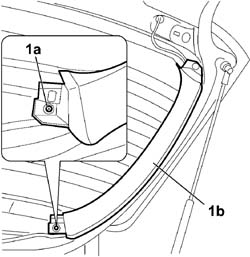

7015A07 <x>TAILGATE SIDE TRIM - R&R</x>
- Path
- Procedures > 70 FITTINGS > 7015 TAILGATE/FLAP > 7015A TAILGATE ASSEMBLY > 7015A07 <x>TAILGATE SIDE TRIM - R&R</x>
- Kind
- repair procedure (removal / refitting; the operation number is the code)
- Applies to
- all engines; all production periods
- Interactive page
- https://sloeber94.github.io/elrnDB-fCrm/en/#/194000941
Applies to: all engines; all production periods
 Removing
Removing
 Refitting
Refitting- Open the tailgate.
- Turn the ignition key to the OFF position.
- Disconnect the negative battery terminal.
Description | Connector | |
|---|---|---|
BATTERY |
Op. 7015A04 TAILGATE INTERIOR PANEL - R+R
Op. 7015A58 INTERNAL TAILGATE MOULDING (ONE) - R+R
1. Undo the fixing bolts (1a) and remove the side trim (1b) from the mounting clips.

Applies to: all engines; all production periods
Refitting
Removing- Check the condition of the trim.
- Place the trim correctly in its housing and tighten the fixing bolts.
Op. 7015A58 INTERNAL TAILGATE MOULDING (ONE) - R+R
Op. 7015A04 TAILGATE INTERIOR PANEL - R+R
- Reconnect the negative battery terminal.
Description | Connector | |
|---|---|---|
BATTERY |